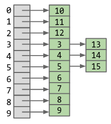

Hashing
Table of Contents
1. Derivation
We’ve been implementing sets so far with search trees, which give us great logarithmic performance when retrieving elements. However, this requires that the elements in our set be comparable in some way. Is there some way to remove this restriction, and perhaps even be faster than logarithmic time?
Suppose we have some set of integers in a list. Finding any one integer in the list will require us to search through the entire list, which is not particularly efficient. But what if instead we keep track of two lists, one of odd integers and another of even integers. Then, we are able to halve our search time by just knowing whether or not the integer we want is even or odd!
Then suppose instead of two lists, we have some large number of buckets into which our integers can be distributed. We can then define some function that reduces an integer to an index that points to the bucket the integer should go in. For example, if our function is \(h(x) = x \text{ mod } 10\), and we have \(10\) buckets:

We’ve now achieved a 10x speedup, but it still is constant time. Can we choose some \(M\) amount of buckets such that for \(N\) elements, we can find an element in constant-time?
The answer is yes: we can make \(M\) depend on \(N\). Specifically, we define \(M = kN\), so then our runtime is now constant.
2. Hash Functions
The function we defined before is an example of a hash function. Data is converted by a hash function into a finite integer representation called a hash code. Java hash codes must be in [-2,147,483,648 to 2,147,483,647]. The hash code is then reduced to a valid index.
For example, if we were to represent some sequence of letters, we can use the ASCII character set. There are 126 possible values, and so we can represent any sequence as a number in base-126. We can then convert this back to base-10 as our hash function.
3. Hash Table
For Java’s implementation of hash tables, all objects in Java must implement a .hashCode() method. For example, this is the hashCode method for strings:
public int hashCode(String s) {
int intRep = 0;
for (int i = 0; i < s.length(); i += 1) {
intRep = intRep * 31;
intRep = intRep + s.charAt(i);
}
return intRep;
}
A hash table has \(\Theta(1)\) runtime, and \(\Theta(N)\) when it resizes. This is because it has to retrieve and recalculate the hashes for each of the elements in the hash table.
Hash tables are often implemented using external chaining to handle collisions. That is, instead of finding another spot in the hash table when there is a collision, the hash table uses another data structure, such as a linked list, to store multiple items per hashcode.
Additionally, keys that are used in a hash table should not be mutable.
3.1. contains
contains uses the hashcode of an object to check if that object is in the hash table. Specifically, it uses the hashcode to find which “bin” the objects should be in, and then uses .equals() to check if that bin contains the object that is equal to yours.
The default Java implementation of the hashcode for objects relies upon the memory address of that object. Therefore, two instances of a class with seemingly “equal” values may actually be treated differently if you do not override the hashcode method.